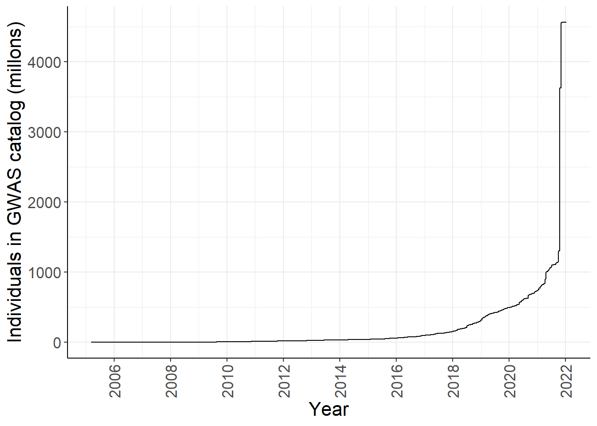
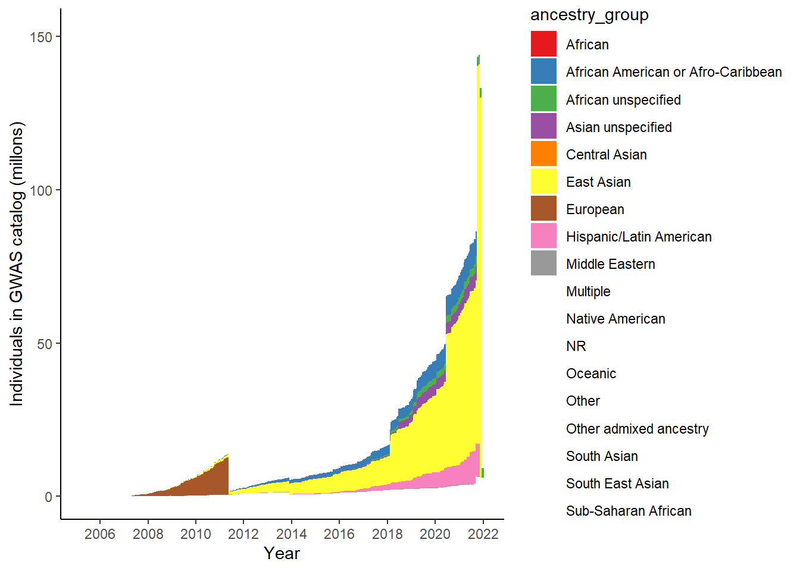

Last updated: 2025-07-30
Checks: 7 0
Knit directory:
genomics_ancest_disease_dispar/
This reproducible R Markdown analysis was created with workflowr (version 1.7.1). The Checks tab describes the reproducibility checks that were applied when the results were created. The Past versions tab lists the development history.
Great! Since the R Markdown file has been committed to the Git repository, you know the exact version of the code that produced these results.
Great job! The global environment was empty. Objects defined in the global environment can affect the analysis in your R Markdown file in unknown ways. For reproduciblity it’s best to always run the code in an empty environment.
The command set.seed(20220216) was run prior to running
the code in the R Markdown file. Setting a seed ensures that any results
that rely on randomness, e.g. subsampling or permutations, are
reproducible.
Great job! Recording the operating system, R version, and package versions is critical for reproducibility.
Nice! There were no cached chunks for this analysis, so you can be confident that you successfully produced the results during this run.
Great job! Using relative paths to the files within your workflowr project makes it easier to run your code on other machines.
Great! You are using Git for version control. Tracking code development and connecting the code version to the results is critical for reproducibility.
The results in this page were generated with repository version 72172e3. See the Past versions tab to see a history of the changes made to the R Markdown and HTML files.
Note that you need to be careful to ensure that all relevant files for
the analysis have been committed to Git prior to generating the results
(you can use wflow_publish or
wflow_git_commit). workflowr only checks the R Markdown
file, but you know if there are other scripts or data files that it
depends on. Below is the status of the Git repository when the results
were generated:
Ignored files:
Ignored: .Rproj.user/
Ignored: data/cdc/
Ignored: data/gwas_catalog/
Untracked files:
Untracked: renv/
Unstaged changes:
Modified: .Rprofile
Modified: README.md
Modified: analysis/_site.yml
Deleted: analysis/about.Rmd
Deleted: analysis/license.Rmd
Note that any generated files, e.g. HTML, png, CSS, etc., are not included in this status report because it is ok for generated content to have uncommitted changes.
These are the previous versions of the repository in which changes were
made to the R Markdown
(analysis/disease_inves_by_ancest.Rmd) and HTML
(docs/disease_inves_by_ancest.html) files. If you’ve
configured a remote Git repository (see ?wflow_git_remote),
click on the hyperlinks in the table below to view the files as they
were in that past version.
| File | Version | Author | Date | Message |
|---|---|---|---|---|
| Rmd | 72172e3 | IJBeasley | 2025-07-30 | Split page into disease by ancest |
| html | 2fd5755 | Isobel Beasley | 2022-02-16 | Build site. |
| Rmd | 7347b5d | Isobel Beasley | 2022-02-16 | Add initial plotting using gwas cat stats |
library(dplyr)
library(ggplot2)
gwas_study_info = data.table::fread("data/gwas_catalog/gwas-catalog-v1.0.3-studies-r2022-02-02.tsv",
sep = "\t",
quote = "")
gwas_ancest_info = data.table::fread("./data/gwas_catalog/gwas_catalog-ancestry_r2022-02-02.tsv",
sep = "\t",
quote = "")
gwas_study_info = gwas_study_info |>
dplyr::rename_all(~gsub(" ", "_", .x))
gwas_ancest_info = gwas_ancest_info |>
dplyr::rename_all(~gsub(" ", "_", .x))
# Set up custom theme for ggplots
custom_theme <-
list(
theme_bw() +
theme(
panel.border = element_blank(),
axis.line = element_line(),
text = element_text(size = 16),
legend.position = "bottom",
strip.background = element_blank(),
axis.text.x = element_text(angle = 90, hjust = 1, vjust = 0.5)
)
)# code adapted from https://github.com/armartin/prs_disparities/blob/master/gwas_disparities_time.R
# https://github.com/armartin/prs_disparities/blob/master/gwas_sfs_pop.R
# gwas cat
# http://bioconductor.org/packages/release/bioc/html/gwascat.html
# following steps from https://static-content.springer.com/esm/art%3A10.1038%2Fs41588-019-0379-x/MediaObjects/41588_2019_379_MOESM1_ESM.pdf
# wonder cdc
# https://wonder.cdc.gov/wonder/help/QuickStart.html#
# https://wonder.cdc.gov/controller/datarequest/D76;jsessionid=2A56E973A3DF13BC5DFDD9C43725
# https://cran.r-project.org/web/packages/whomds/index.html
# whomds: Calculate Results from WHO Model Disability Survey Data
# Order GWAS catalog by date
gwas_ancest_info <- gwas_ancest_info %>% arrange(DATE)
# calculate cumulative number of individuals
gwas_ancest_info = gwas_ancest_info %>%
mutate(cum_num = cumsum(ifelse(is.na(NUMBER_OF_INDIVDUALS), 0, NUMBER_OF_INDIVDUALS))
)
# plot cumulative numbers
gwas_ancest_info %>%
group_by(DATE) %>%
slice_max(NUMBER_OF_INDIVDUALS) %>%
ggplot(aes(x=DATE,y=cum_num/1e6)) +
geom_line() +
#geom_area(position = 'stack') +
scale_x_date(date_labels = '%Y', date_breaks = "2 years") +
custom_theme +
labs(x = "Year", y = "Individuals in GWAS catalog (millons)")
| Version | Author | Date |
|---|---|---|
| 2fd5755 | Isobel Beasley | 2022-02-16 |
group_ancestry_fn = function(study_ancest){
case_when(study_ancest %in% c('Sub-Saharan African, African American or Afro-Caribbean',
'Sub-Saharan African, African unspecified',
'African-American or Afro-Caribbean') ~ 'African',
#grouped_ancest = append(grouped_ancest,'African')
study_ancest %in% c('East Asian, Asian unspecified',
'South Asian, East Asian ',
'South Asian, South East Asian',
'South Asian, South East Asian, East Asian',
'South East Asian, East Asian',
'South East Asian, South Asian, East Asian') ~'Asian unspecified',
#grouped_ancest = append(grouped_ancest,'Asian unspecified')
study_ancest == 'Greater Middle Eastern (Middle Eastern, North African or Persian)' ~'Middle Eastern',
#grouped_ancest = append(grouped_ancest,'Middle Eastern')
study_ancest %in% c('Aboriginal Australian', 'Oceanian') ~'Oceanic',
#grouped_ancest = append(grouped_ancest,'Oceanic')
grepl(", ", study_ancest) ~ 'Multiple',
#grouped_ancest = append(grouped_ancest,'Multiple')
study_ancest %in% "Hispanic or Latin American" ~'Hispanic/Latin American',
#grouped_ancest = append(grouped_ancest,'Hispanic/Latin American')
TRUE~study_ancest
#grouped_ancest = append(grouped_ancest,study_ancest)
)
}
grouped_ancest = vector()
for(study_ancest in unique(gwas_ancest_info$BROAD_ANCESTRAL_CATEGORY)){
grouped_ancest[study_ancest] = group_ancestry_fn(study_ancest)
}
# ancest_group = data.frame(group_ancest = grouped_ancest,
# BROAD_ANCESTRAL_CATEGORY =
# unique(gwas_ancest_info$BROAD_ANCESTRAL_CATEGORY))
#
# }
grouped_ancest_map = data.frame(ancestry_group = grouped_ancest,
BROAD_ANCESTRAL_CATEGORY = unique(gwas_ancest_info$BROAD_ANCESTRAL_CATEGORY)
)
gwas_ancest_info = dplyr::left_join(
gwas_ancest_info,
grouped_ancest_map)Joining with `by = join_by(BROAD_ANCESTRAL_CATEGORY)`gwas_ancest_info %>%
group_by(ancestry_group) %>%
summarise(n = sum(NUMBER_OF_INDIVDUALS, na.rm = TRUE))# A tibble: 18 × 2
ancestry_group n
<chr> <dbl>
1 African 60441
2 African American or Afro-Caribbean 8278986
3 African unspecified 3028217
4 Asian unspecified 4697042
5 Central Asian 42945
6 East Asian 124056468
7 European 4235129752
8 Hispanic/Latin American 10840275
9 Middle Eastern 348192
10 Multiple 56292255
11 NR 110448036
12 Native American 91973
13 Oceanic 116432
14 Other 194359
15 Other admixed ancestry 107563
16 South Asian 6138158
17 South East Asian 170602
18 Sub-Saharan African 827401gwas_ancest_info %>%
group_by(ancestry_group) %>%
mutate(ancest_cumsum = cumsum(NUMBER_OF_INDIVDUALS)) %>%
ggplot(aes(x=DATE,y=ancest_cumsum/(10^6), fill = ancestry_group)) +
#geom_area() +
geom_area() +
scale_x_date(date_labels = '%Y', date_breaks = "2 years") +
theme_classic() +
labs(x = "Year", y = "Individuals in GWAS catalog (millons)") +
scale_fill_brewer(palette = "Set1")Warning: Removed 32641 rows containing non-finite outside the scale range
(`stat_align()`).Warning in RColorBrewer::brewer.pal(n, pal): n too large, allowed maximum for palette Set1 is 9
Returning the palette you asked for with that many colors
| Version | Author | Date |
|---|---|---|
| 2fd5755 | Isobel Beasley | 2022-02-16 |
inner_join(
gwas_study_info %>% select(STUDY_ACCESSION,
`DISEASE/TRAIT`,
MAPPED_TRAIT),
gwas_ancest_info %>% select(STUDY_ACCESSION,
NUMBER_OF_INDIVDUALS,
BROAD_ANCESTRAL_CATEGORY,
ancestry_group)) %>%
group_by(BROAD_ANCESTRAL_CATEGORY,
`DISEASE/TRAIT`) %>%
summarise(n = sum(NUMBER_OF_INDIVDUALS)) %>%
group_by(BROAD_ANCESTRAL_CATEGORY) %>%
slice_max(n,n = 5)Joining with `by = join_by(STUDY_ACCESSION)`
`summarise()` has grouped output by 'BROAD_ANCESTRAL_CATEGORY'. You can
override using the `.groups` argument.# A tibble: 803 × 3
# Groups: BROAD_ANCESTRAL_CATEGORY [192]
BROAD_ANCESTRAL_CATEGORY `DISEASE/TRAIT` n
<chr> <chr> <int>
1 Aboriginal Australian Urinary albumi… 746
2 Aboriginal Australian Otitis media 391
3 Aboriginal Australian Type 2 diabetes 391
4 Aboriginal Australian Body mass index 361
5 African American or Afro-Caribbean Cataracts 262576
6 African American or Afro-Caribbean Body mass index 228346
7 African American or Afro-Caribbean Type 2 diabetes 202731
8 African American or Afro-Caribbean Diastolic bloo… 200474
9 African American or Afro-Caribbean Systolic blood… 200474
10 African American or Afro-Caribbean, African unspecifi… Type 2 diabetes 287510
# ℹ 793 more rowscdc_stats = data.table::fread("data/cdc/Underlying Cause of Death, 1999-2020.txt",
drop = c("Notes", "Race Code", "Cause of death Code")) %>%
filter(!if_any(everything(), ~.x == ""))
cdc_stats %>%
group_by(Race) %>%
slice_max(Deaths,n=10)# A tibble: 40 × 6
# Groups: Race [4]
Race `Cause of death` Deaths Population `Crude Rate` `Age Adjusted Rate`
<chr> <chr> <int> <int64> <chr> <chr>
1 American… Atherosclerotic… 15927 88362592 18.0 33.9
2 American… Bronchus or lun… 15334 88362592 17.4 28.3
3 American… Acute myocardia… 13755 88362592 15.6 26.7
4 American… Chronic obstruc… 10500 88362592 11.9 22.0
5 American… Atherosclerotic… 9090 88362592 10.3 16.7
6 American… Unspecified dia… 8307 88362592 9.4 15.0
7 American… Alcoholic cirrh… 8129 88362592 9.2 10.7
8 American… Stroke, not spe… 6055 88362592 6.9 13.8
9 American… Pneumonia, unsp… 5728 88362592 6.5 12.5
10 American… Unspecified dem… 5092 88362592 5.8 13.9
# ℹ 30 more rows# wonder cdc
# https://wonder.cdc.gov/wonder/help/QuickStart.html#
# https://wonder.cdc.gov/controller/datarequest/D76;jsessionid=2A56E973A3DF13BC5DFDD9C43725
# https://cran.r-project.org/web/packages/whomds/index.html
# whomds: Calculate Results from WHO Model Disability Survey Data
sessionInfo()R version 4.3.1 (2023-06-16 ucrt)
Platform: x86_64-w64-mingw32/x64 (64-bit)
Running under: Windows 11 x64 (build 26100)
Matrix products: default
locale:
[1] LC_COLLATE=English_Australia.utf8 LC_CTYPE=English_Australia.utf8
[3] LC_MONETARY=English_Australia.utf8 LC_NUMERIC=C
[5] LC_TIME=English_Australia.utf8
time zone: America/Los_Angeles
tzcode source: internal
attached base packages:
[1] stats graphics grDevices datasets utils methods base
other attached packages:
[1] ggplot2_3.5.2 dplyr_1.1.4 workflowr_1.7.1
loaded via a namespace (and not attached):
[1] bit_4.0.5 gtable_0.3.6 jsonlite_2.0.0 compiler_4.3.1
[5] renv_1.0.3 promises_1.3.3 tidyselect_1.2.1 Rcpp_1.0.14
[9] stringr_1.5.1 git2r_0.36.2 callr_3.7.6 later_1.4.2
[13] jquerylib_0.1.4 scales_1.4.0 yaml_2.3.10 fastmap_1.2.0
[17] R6_2.6.1 labeling_0.4.3 generics_0.1.4 knitr_1.50
[21] tibble_3.2.1 rprojroot_2.1.0 RColorBrewer_1.1-3 bslib_0.9.0
[25] pillar_1.10.2 rlang_1.1.6 utf8_1.2.5 cachem_1.1.0
[29] stringi_1.8.7 httpuv_1.6.13 xfun_0.52 getPass_0.2-4
[33] fs_1.6.6 sass_0.4.10 bit64_4.0.5 cli_3.6.5
[37] withr_3.0.2 magrittr_2.0.3 ps_1.9.1 grid_4.3.1
[41] digest_0.6.37 processx_3.8.6 rstudioapi_0.15.0 lifecycle_1.0.4
[45] vctrs_0.6.5 data.table_1.17.4 evaluate_1.0.3 glue_1.8.0
[49] farver_2.1.2 whisker_0.4.1 rmarkdown_2.29 httr_1.4.7
[53] tools_4.3.1 pkgconfig_2.0.3 htmltools_0.5.8.1